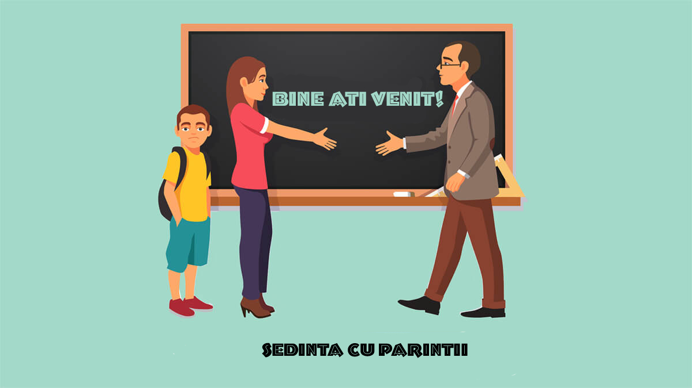

Anunturi
Subiecte de interes pentru parinti
Sedinta cu parintii - 09/03/2022
Comunicarea dintre şcoală şi părinte se realizează, conform normelor Ministerului Educaţiei, prin şedinţe cu părinţii (unde sînt prezentate teme generale de educaţie a copilului), consultaţii (în care se discută problemele individuale ale elevilor), scrisori, convorbiri telefonice etc.
Un dialog eficient între părinţi şi şcoală nu poate începe decît de la încredere în bunele intenţii ale celuilalt, în buna lui credinţă. Motivele pentru care un copil întîmpină dificultăţi mai mici sau mai mari în adaptarea la programul şcolar nu pot fi înlăturate atîta timp cît ele devin tot atîtea prilejuri de aruncat vinovăţia dintr-o parte în alta. Dimpotrivă, ele vor fi amplificate de conflictul dintre adulţi. În definitiv, scopul consultaţiei cu părinţii – după cum îi spune şi numele – este acela de a găsi cauze şi soluţii, şi nu acela de a anihila partea adversă.